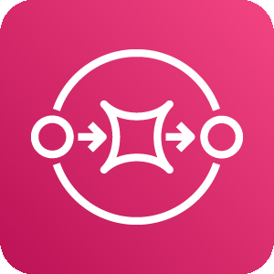

Two drivers, two languages, one neutral joint report over WhatsApp. Everything in one AWS CDK stack.
📱
Driver ASpanish · text, voice, photos
📱
Driver BEnglish · joins with a code
💬
WhatsApp (Meta)Cloud API
📋
WhatsApp Flowapproval form, one for every language
AWS · eu-west-1 · stack test-claimline-core
End User Messaging SocialWhatsApp number
Amazon SNSinbound topic
Router Lambdadedupe · media · voice · form replies · delivery statuses
Bedrock AgentCore RuntimeStrands agent · Claude Opus 5.5 on Amazon Bedrocktools: record_fact · reconcile_case · message_other_driver · send_approval_form · handoff_human
Send Lambdathe only sender: text, form, PDF
used by the router
Amazon S3photos, voice notes, transcripts
Amazon Transcribevoice notes, es / en detected
DynamoDBmessages: each one handled once

Amazon SQSdead-letter queue
used by the agent
AgentCore Memoryhistory per driver per case
DynamoDBcases · drivers · facts with quotes
Amazon S3joint report PDF
Amazon SES (next)report to both insurers, adjuster replies back to WhatsApp
CloudWatch Logsone JSON line per message: case, role, event
AWS CDKone stack, one command: cdk deploy
Reconciliation is plain codeEach fact is AGREED, ONLY A, ONLY B or CONFLICT by rules (10 km/h, 10 min, both lights green). Claude only judges whether two free-text values mean the same. The PDF is built in code from those rows and the drivers' own words.
Local prototype (WHATSAPP_ON=0)A web page plays WhatsApp and Meta; the same router, agent and send code runs in one process with in-memory AWS clients, and Meta's checks (24-hour window, Flow schema) are emulated. Speech uses ElevenLabs instead of Transcribe.